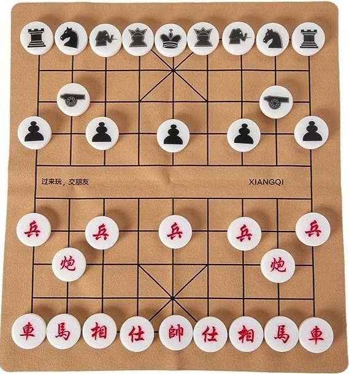

(on a pas de photo du palteau personnalisé)

Description du plateau personnalisé et du concept du jeu.
Description du projet
Le projet consiste à développer une application logicielle basée sur une variante du jeu d’échecs chinois appelée Xiangqi. Cette variante introduit un plateau modifié et de nouvelles contraintes de déplacement afin d’enrichir la dimension stratégique du jeu.
Le plateau est composé de 11 colonnes et 11 lignes incluant des zones jouables, des colonnes neutres et une ligne représentant la rivière.
Plateau personnalisé
Les colonnes neutres agissent comme des murs de protection autour du palais. Aucune pièce ne peut s’arrêter sur ces colonnes et elles ne sont pas comptées dans la distance des déplacements.